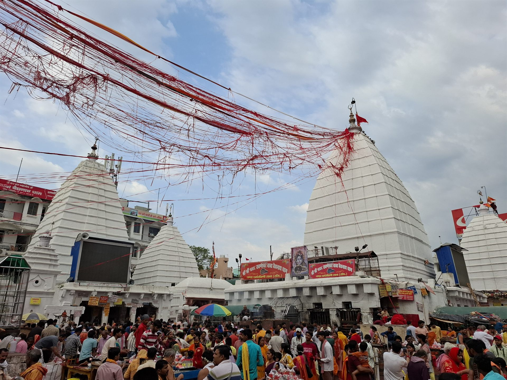

భారతదేశంలోని పన్నెండు పవిత్ర ద్వాదశ జ్యోతిర్లింగాలలో పరమేశ్వరుని అమృతమయ వైద్య స్వరూపంగా పూజలందుకుంటున్న మహాదివ్య క్షేత్రం శ్రీ వైద్యనాథ జ్యోతిర్లింగం.
"వైద్యనాథుడు" అంటే సకల రోగాలను నయం చేసే ఆదివైద్యుడు, భవరోగాలను నివారించే జగద్గురువైన పరమశివుడు అని అర్థం. ఆధ్యాత్మిక సాధనలో మానసిక రుగ్మతలను, శారీరక వ్యాధులను రూపుమాపి ఆయురారోగ్యాలను ప్రసాదించే కల్పవృక్షంగా భక్తులు స్వామిని కొలుస్తారు.
సనాతన ధర్మ సంప్రదాయంలో వైద్యనాథ జ్యోతిర్లింగం ప్రధానంగా రెండు పరమ పవిత్ర క్షేత్రాలతో అనుసంధానమై పూజలందుకుంటోంది: జార్ఖండ్ రాష్ట్రంలోని బాబా బైద్యనాథ్ ధామ్ (దేవఘర్) మరియు మహారాష్ట్రలోని శ్రీ పర్లీ వైద్యనాథ్ క్షేత్రం.
శ్రీ వైద్యనాథ జ్యోతిర్లింగ క్షేత్రం
ద్వాదశ జ్యోతిర్లింగ దివ్య క్షేత్రం • బాబా బైద్యనాథ్ ధామ్ & పర్లీ వైద్యనాథ్

౧. పరిచయం
౨. క్షేత్ర ప్రాముఖ్యత — ఆయురారోగ్య ప్రదాత
పరమశివుడు కేవలం లయకారుడు మాత్రమే కాదు; ఆయన "భిషక్" — అనగా సమస్త లోకాలకు సర్వోన్నత వైద్యుడు. వేదాలలో రుద్రుడిని "ప్రథమో దైవ్యో భిషక్" (దేవతలలో ప్రథమ దివ్య వైద్యుడు) అని కీర్తించారు.
వైద్యనాథ లింగాన్ని దర్శించి, స్పర్శించి, జలాభిషేకం చేసిన వారికి దీర్ఘకాలిక వ్యాధులు, మానసిక అశాంతి తొలగిపోయి పరిపూర్ణ స్వస్థత, దీర్ఘాయువు లభిస్తాయని విశ్వాసం. ఇక్కడి లింగాన్ని "కామనా లింగం" అని కూడా పిలుస్తారు, అనగా భక్తుల సకల సత్సంకల్పాలను సిద్ధించే మహా మహిమాన్విత స్వరూపం.
వైద్యనాథ లింగాన్ని దర్శించి, స్పర్శించి, జలాభిషేకం చేసిన వారికి దీర్ఘకాలిక వ్యాధులు, మానసిక అశాంతి తొలగిపోయి పరిపూర్ణ స్వస్థత, దీర్ఘాయువు లభిస్తాయని విశ్వాసం. ఇక్కడి లింగాన్ని "కామనా లింగం" అని కూడా పిలుస్తారు, అనగా భక్తుల సకల సత్సంకల్పాలను సిద్ధించే మహా మహిమాన్విత స్వరూపం.
౩. క్షేత్ర పురాణ గాథ — రావణుని తపస్సు & వైద్యనాథ ఆవిర్భావం
శివ పురాణంలోని కోటిరుద్ర సంహిత ప్రకారం, వైద్యనాథ జ్యోతిర్లింగ ఆవిర్భావం వెనుక రావణుని తపస్సుతో కూడిన అద్భుత ఘట్టం ఉంది:
లంకాధిపతి అయిన రావణుడు మహా శివభక్తుడు. పరమశివుడు నిరంతరం తన లంకలోనే కొలువై ఉండాలని ఆకాంక్షించి, హిమాలయాలలో పరమశివుని గురించి కఠోరమైన తపస్సు ప్రారంభించాడు. శివుడు వెంటనే ప్రత్యక్షం కాకపోవడంతో, రావణుడు ఒక్కొక్కటిగా తన శిరస్సులను ఖండించి యజ్ఞగుండంలో శివార్పణ చేశాడు. తొమ్మిది శిరస్సులు సమర్పించి, పదవ శిరస్సును ఖండించబోతుండగా, అతని అచంచల భక్తికి పరవశుడైన పరమశివుడు సాక్షాత్కరించాడు.
శివుడు ఒక దివ్య వైద్యుని వలె (వైద్యుడిగా) రావణుని తెగిపడిన శిరస్సులన్నింటినీ తిరిగి అతికించి, సంపూర్ణ ఆయురారోగ్యాలతో అతడిని పునర్జీవింపజేశాడు. భక్తుని శరీర రోగాలను, ఛేదనలను స్వయంగా నయం చేసినందున పరమేశ్వరునికి "వైద్యనాథుడు" అనే దివ్య నామం సార్థకమైంది.
అనంతరం రావణుని కోరిక మేరకు పరమశివుడు తన ఆత్మలింగ స్వరూపమైన కామనా లింగాన్ని అనుగ్రహించాడు. అయితే ఒక కఠినమైన షరతు విధించాడు: "ఈ లింగాన్ని లంకకు చేర్చే మార్గంలో ఎక్కడా భూమిపై పెట్టకూడదు. ఎక్కడైతే నేలను తాకుతుందో, అక్కడే శాశ్వతంగా ప్రతిష్ఠితమై స్థిరపడుతుంది."
రావణుడు ఆ లింగంతో లంకకు బయల్దేరాడు. కానీ రావణుని చేతిలో ఆత్మలింగం ఉంటే లోకాలకు ముప్పు వాటిల్లుతుందని భయపడిన దేవతలు శ్రీమహావిష్ణువును ఆశ్రయించారు. విష్ణువు వరుణదేవుని ద్వారా రావణుడికి తీవ్రమైన లఘుశంక (జలకృత్యం) కలిగేలా చేశాడు. అదే సమయంలో విష్ణువు ఒక బాలుడి (గొల్లవాడైన బైజు) రూపంలో అక్కడ ప్రత్యక్షమయ్యాడు. రావణుడు ఆ బాలుడిని లింగాన్ని కాసేపు చేతిలో పట్టుకోమని, నేలపై పెట్టవద్దని చెప్పి వెళ్లాడు. రావణుడు రాక ఆలస్యమవడంతో, ఆ బాలుడు లింగాన్ని భూమిపై ఉంచాడు. క్షణంలో ఆ లింగం భూమిలో పాతుకుపోయి శాశ్వతంగా స్థిరపడింది.
తిరిగి వచ్చిన రావణుడు లింగాన్ని కదిలించడానికి తన సమస్త బలంతో ప్రయత్నించాడు. కానీ లింగం ఇసుమంతైనా కదలలేదు. తీవ్ర నిరాశతో రావణుడు తన బొటనవ్రేలితో లింగంపై బలంగా ఒత్తాడు. నేటికీ వైద్యనాథ జ్యోతిర్లింగంపై ఆ వేలి ముద్రను భక్తులు ప్రత్యక్షంగా దర్శించవచ్చు.
లంకాధిపతి అయిన రావణుడు మహా శివభక్తుడు. పరమశివుడు నిరంతరం తన లంకలోనే కొలువై ఉండాలని ఆకాంక్షించి, హిమాలయాలలో పరమశివుని గురించి కఠోరమైన తపస్సు ప్రారంభించాడు. శివుడు వెంటనే ప్రత్యక్షం కాకపోవడంతో, రావణుడు ఒక్కొక్కటిగా తన శిరస్సులను ఖండించి యజ్ఞగుండంలో శివార్పణ చేశాడు. తొమ్మిది శిరస్సులు సమర్పించి, పదవ శిరస్సును ఖండించబోతుండగా, అతని అచంచల భక్తికి పరవశుడైన పరమశివుడు సాక్షాత్కరించాడు.
శివుడు ఒక దివ్య వైద్యుని వలె (వైద్యుడిగా) రావణుని తెగిపడిన శిరస్సులన్నింటినీ తిరిగి అతికించి, సంపూర్ణ ఆయురారోగ్యాలతో అతడిని పునర్జీవింపజేశాడు. భక్తుని శరీర రోగాలను, ఛేదనలను స్వయంగా నయం చేసినందున పరమేశ్వరునికి "వైద్యనాథుడు" అనే దివ్య నామం సార్థకమైంది.
అనంతరం రావణుని కోరిక మేరకు పరమశివుడు తన ఆత్మలింగ స్వరూపమైన కామనా లింగాన్ని అనుగ్రహించాడు. అయితే ఒక కఠినమైన షరతు విధించాడు: "ఈ లింగాన్ని లంకకు చేర్చే మార్గంలో ఎక్కడా భూమిపై పెట్టకూడదు. ఎక్కడైతే నేలను తాకుతుందో, అక్కడే శాశ్వతంగా ప్రతిష్ఠితమై స్థిరపడుతుంది."
రావణుడు ఆ లింగంతో లంకకు బయల్దేరాడు. కానీ రావణుని చేతిలో ఆత్మలింగం ఉంటే లోకాలకు ముప్పు వాటిల్లుతుందని భయపడిన దేవతలు శ్రీమహావిష్ణువును ఆశ్రయించారు. విష్ణువు వరుణదేవుని ద్వారా రావణుడికి తీవ్రమైన లఘుశంక (జలకృత్యం) కలిగేలా చేశాడు. అదే సమయంలో విష్ణువు ఒక బాలుడి (గొల్లవాడైన బైజు) రూపంలో అక్కడ ప్రత్యక్షమయ్యాడు. రావణుడు ఆ బాలుడిని లింగాన్ని కాసేపు చేతిలో పట్టుకోమని, నేలపై పెట్టవద్దని చెప్పి వెళ్లాడు. రావణుడు రాక ఆలస్యమవడంతో, ఆ బాలుడు లింగాన్ని భూమిపై ఉంచాడు. క్షణంలో ఆ లింగం భూమిలో పాతుకుపోయి శాశ్వతంగా స్థిరపడింది.
తిరిగి వచ్చిన రావణుడు లింగాన్ని కదిలించడానికి తన సమస్త బలంతో ప్రయత్నించాడు. కానీ లింగం ఇసుమంతైనా కదలలేదు. తీవ్ర నిరాశతో రావణుడు తన బొటనవ్రేలితో లింగంపై బలంగా ఒత్తాడు. నేటికీ వైద్యనాథ జ్యోతిర్లింగంపై ఆ వేలి ముద్రను భక్తులు ప్రత్యక్షంగా దర్శించవచ్చు.
౪. రెండు పవిత్ర క్షేత్రాల సమన్వయం
ద్వాదశ జ్యోతిర్లింగాల ప్రశస్తిలో వైద్యనాథ క్షేత్రం రెండు ప్రధాన స్థానాల్లో అత్యంత ప్రామాణికంగా పరిగణించబడుతోంది:
• బాబా బైద్యనాథ్ ధామ్ (దేవఘర్, జార్ఖండ్): రావణుని కథ జరిగిన అసలైన 'చితిభూమి' లేదా 'హార్దపీఠం'గా ప్రసిద్ధి. శ్రావణ మాసంలో లక్షలాది మంది భక్తులు గంగాజలంతో కాలినడకన వచ్చి అభిషేకించే అతిపెద్ద వైభవోపేత క్షేత్రం ఇది. అంతేకాకుండా 51 శక్తిపీఠాలలో ఒకటైన హృదయ పీఠం (జయదుర్గ) ఇక్కడే కొలువై ఉంది.
• శ్రీ పర్లీ వైద్యనాథ్ (బీడ్ జిల్లా, మహారాష్ట్ర): జగద్గురు ఆదిశంకరాచార్యులు విరచించిన ద్వాదశ జ్యోతిర్లింగ స్తోత్రంలో "పరల్యాం వైద్యనాథం చ..." అని ప్రస్తావించిన ప్రాచీన క్షేత్రం. సహ్యాద్రి మరియు కాంతార పర్వత సానువుల్లో, ఔషధ వృక్షాల మధ్య వెలసిన దివ్య శైవ క్షేత్రం.
ఈ రెండు క్షేత్రాలూ పరమశివుని వైద్యనాథ దివ్య శక్తికి అద్భుత కేంద్రాలుగా భాసిల్లుతున్నాయి.
• బాబా బైద్యనాథ్ ధామ్ (దేవఘర్, జార్ఖండ్): రావణుని కథ జరిగిన అసలైన 'చితిభూమి' లేదా 'హార్దపీఠం'గా ప్రసిద్ధి. శ్రావణ మాసంలో లక్షలాది మంది భక్తులు గంగాజలంతో కాలినడకన వచ్చి అభిషేకించే అతిపెద్ద వైభవోపేత క్షేత్రం ఇది. అంతేకాకుండా 51 శక్తిపీఠాలలో ఒకటైన హృదయ పీఠం (జయదుర్గ) ఇక్కడే కొలువై ఉంది.
• శ్రీ పర్లీ వైద్యనాథ్ (బీడ్ జిల్లా, మహారాష్ట్ర): జగద్గురు ఆదిశంకరాచార్యులు విరచించిన ద్వాదశ జ్యోతిర్లింగ స్తోత్రంలో "పరల్యాం వైద్యనాథం చ..." అని ప్రస్తావించిన ప్రాచీన క్షేత్రం. సహ్యాద్రి మరియు కాంతార పర్వత సానువుల్లో, ఔషధ వృక్షాల మధ్య వెలసిన దివ్య శైవ క్షేత్రం.
ఈ రెండు క్షేత్రాలూ పరమశివుని వైద్యనాథ దివ్య శక్తికి అద్భుత కేంద్రాలుగా భాసిల్లుతున్నాయి.
౫. దేవఘర్ బాబా బైద్యనాథ్ ధామ్ విశేషాలు
జార్ఖండ్లోని దేవఘర్ ఆలయ సముదాయం అద్భుతమైన ఆధ్యాత్మిక వాతావరణాన్ని కలిగి ఉంది:
• 22 దేవాలయాల సముదాయం: ప్రధాన వైద్యనాథ మందిరంతో పాటు పరివార దేవతలైన పార్వతీ దేవి, కాళిక, తార, లక్ష్మీనారాయణ, ఆనందభైరవుడు, గణపతి మరియు సూర్యదేవునికి అంకితమైన 22 ప్రాచీన ఆలయాలు ఒకే ప్రాంగణంలో ఉన్నాయి.
• పంచశూల విశిష్టత: సాధారణ శివాలయాల గోపురాలపై త్రిశూలం ఉంటుంది. కానీ బైద్యనాథ్ ఆలయ శిఖరంపై పంచముఖాలతో కూడిన అరుదైన పంచశూలం అమర్చబడి ఉంది. ఇది తంత్ర శాస్త్ర రీత్యా రక్షా కవచంగా, ప్రకృతి వైపరీత్యాల నుండి ఆలయాన్ని కాపాడే దివ్య సాధనంగా భావిస్తారు.
• శివగంగ తీర్థం: ఆలయానికి సమీపంలో ఉన్న పవిత్ర సరోవరం. రావణుడు శివపూజకు ముందు తన పిడికిలితో భూమిని తాకించి ఈ తీర్థాన్ని సృష్టించాడని పురాణ ప్రతీతి. భక్తులు ఇందులో స్నానమాచరించి స్వామివారి దర్శనానికి వెళతారు.
• 22 దేవాలయాల సముదాయం: ప్రధాన వైద్యనాథ మందిరంతో పాటు పరివార దేవతలైన పార్వతీ దేవి, కాళిక, తార, లక్ష్మీనారాయణ, ఆనందభైరవుడు, గణపతి మరియు సూర్యదేవునికి అంకితమైన 22 ప్రాచీన ఆలయాలు ఒకే ప్రాంగణంలో ఉన్నాయి.
• పంచశూల విశిష్టత: సాధారణ శివాలయాల గోపురాలపై త్రిశూలం ఉంటుంది. కానీ బైద్యనాథ్ ఆలయ శిఖరంపై పంచముఖాలతో కూడిన అరుదైన పంచశూలం అమర్చబడి ఉంది. ఇది తంత్ర శాస్త్ర రీత్యా రక్షా కవచంగా, ప్రకృతి వైపరీత్యాల నుండి ఆలయాన్ని కాపాడే దివ్య సాధనంగా భావిస్తారు.
• శివగంగ తీర్థం: ఆలయానికి సమీపంలో ఉన్న పవిత్ర సరోవరం. రావణుడు శివపూజకు ముందు తన పిడికిలితో భూమిని తాకించి ఈ తీర్థాన్ని సృష్టించాడని పురాణ ప్రతీతి. భక్తులు ఇందులో స్నానమాచరించి స్వామివారి దర్శనానికి వెళతారు.
౬. శక్తిపీఠ–జ్యోతిర్లింగ దివ్య సంగమం & గఠ్బంధన్
దేవఘర్ క్షేత్రానికి ఉన్న మరొక అపూర్వ విశేషం ఏమిటంటే, ఇది ద్వాదశ జ్యోతిర్లింగాలలో ఒకటి కావడమే కాక, అష్టాదశ / 51 శక్తిపీఠాలలో ఒకటైన "హృదయ పీఠం" (సతీదేవి హృదయ భాగం పడిన పవిత్ర స్థలం — జయదుర్గా దేవి).
శివుడు మరియు శక్తి ఒకే చోట ప్రత్యక్షంగా కొలువైన అరుదైన క్షేత్రం కావడంతో, ఇక్కడ ప్రతిరోజూ "గఠ్బంధన్" అనే విశేష ఉత్సవం జరుగుతుంది. ప్రధాన బైద్యనాథ్ ఆలయ శిఖరాన్ని, ఎదురుగా ఉన్న పార్వతీదేవి ఆలయ శిఖరాన్ని ఎర్రటి పవిత్ర పట్టు వస్త్రం మరియు దారాలతో కలుపుతారు. ఈ బంధనాన్ని దర్శించడం దాంపత్య సుఖానికి, అన్యోన్యతకు శుభప్రదమని భక్తులు విశ్వసిస్తారు.
శివుడు మరియు శక్తి ఒకే చోట ప్రత్యక్షంగా కొలువైన అరుదైన క్షేత్రం కావడంతో, ఇక్కడ ప్రతిరోజూ "గఠ్బంధన్" అనే విశేష ఉత్సవం జరుగుతుంది. ప్రధాన బైద్యనాథ్ ఆలయ శిఖరాన్ని, ఎదురుగా ఉన్న పార్వతీదేవి ఆలయ శిఖరాన్ని ఎర్రటి పవిత్ర పట్టు వస్త్రం మరియు దారాలతో కలుపుతారు. ఈ బంధనాన్ని దర్శించడం దాంపత్య సుఖానికి, అన్యోన్యతకు శుభప్రదమని భక్తులు విశ్వసిస్తారు.
౭. పర్లీ వైద్యనాథ్ (మహారాష్ట్ర) క్షేత్ర విశేషాలు
మహారాష్ట్రలోని మరాఠ్వాడా ప్రాంతం, బీడ్ జిల్లాలో వెలసిన పర్లీ వైద్యనాథ్ క్షేత్రం అత్యంత ప్రశాంతమైన శైవ పుణ్యస్థలి:
• మేరు పర్వత నేపథ్యం: ఆలయం మేరు లేదా కాంతార పర్వతంపై నిర్మించబడింది. చుట్టూ ఉన్న కొండలలో అపారమైన ఆయుర్వేద మూలికలు లభిస్తాయి. ఇక్కడి నుంచి ప్రవహించే నీరు, స్పర్శించే గాలి సైతం వ్యాధులను నయం చేస్తుందని విశ్వసిస్తారు.
• అహల్యాబాయి హోల్కర్ జీర్ణోద్ధరణ: 18వ శతాబ్దంలో పుణ్యశ్లోక రాణి అహల్యాబాయి హోల్కర్ పర్లీ వైద్యనాథ్ ఆలయాన్ని నల్లరాతితో అత్యంత దృఢంగా, మనోహరమైన శిల్పాలతో పునర్నిర్మించారు.
• స్పర్శ దర్శనం: ఇక్కడ భక్తులు స్వయంగా గర్భగుడిలోకి వెళ్లి జ్యోతిర్లింగాన్ని స్పృశించి పూజించే అద్భుత సంప్రదాయం ఉంది.
• మేరు పర్వత నేపథ్యం: ఆలయం మేరు లేదా కాంతార పర్వతంపై నిర్మించబడింది. చుట్టూ ఉన్న కొండలలో అపారమైన ఆయుర్వేద మూలికలు లభిస్తాయి. ఇక్కడి నుంచి ప్రవహించే నీరు, స్పర్శించే గాలి సైతం వ్యాధులను నయం చేస్తుందని విశ్వసిస్తారు.
• అహల్యాబాయి హోల్కర్ జీర్ణోద్ధరణ: 18వ శతాబ్దంలో పుణ్యశ్లోక రాణి అహల్యాబాయి హోల్కర్ పర్లీ వైద్యనాథ్ ఆలయాన్ని నల్లరాతితో అత్యంత దృఢంగా, మనోహరమైన శిల్పాలతో పునర్నిర్మించారు.
• స్పర్శ దర్శనం: ఇక్కడ భక్తులు స్వయంగా గర్భగుడిలోకి వెళ్లి జ్యోతిర్లింగాన్ని స్పృశించి పూజించే అద్భుత సంప్రదాయం ఉంది.
౮. శ్రావణ మాస కాన్వడ్ యాత్ర & ఉత్సవాలు
దేవఘర్ క్షేత్రంలో శ్రావణ మాసంలో జరిగే "శ్రావణి మేళా" ప్రపంచంలోనే అతిపెద్ద నిరంతర తీర్థయాత్రలలో ఒకటి:
• సుల్తాన్గంజ్ కాన్వడ్ యాత్ర: భక్తులు (కాన్వడీలు) బీహార్లోని సుల్తాన్గంజ్ వద్ద ఉత్తరవాహినిగా ప్రవహించే పవిత్ర గంగాజలాన్ని కావళ్ళలో (కాన్వడ్) నింపుకుని, సుమారు 105 కిలోమీటర్ల దూరం కాలిబాటన చెప్పులు లేకుండా నడిచి వచ్చి దేవఘర్ బైద్యనాథునికి సమర్పిస్తారు.
• "బోల్ బమ్ — తారక్ బమ్" అనే నినాదాలతో శ్రావణ మాసమంతా లక్షలాది భక్తులు కాషాయ వస్త్రాలు ధరించి నడిచే దృశ్యం భక్తి పారవశ్యాన్ని కలిగిస్తుంది.
• మహాశివరాత్రి: ఈ పర్వదినాన ఆలయాలలో రాత్రంతా చతుర్యామ పూజలు, రుద్రాభిషేకాలు మరియు శివపార్వతుల కల్యాణోత్సవం వైభవంగా జరుగుతాయి.
• సుల్తాన్గంజ్ కాన్వడ్ యాత్ర: భక్తులు (కాన్వడీలు) బీహార్లోని సుల్తాన్గంజ్ వద్ద ఉత్తరవాహినిగా ప్రవహించే పవిత్ర గంగాజలాన్ని కావళ్ళలో (కాన్వడ్) నింపుకుని, సుమారు 105 కిలోమీటర్ల దూరం కాలిబాటన చెప్పులు లేకుండా నడిచి వచ్చి దేవఘర్ బైద్యనాథునికి సమర్పిస్తారు.
• "బోల్ బమ్ — తారక్ బమ్" అనే నినాదాలతో శ్రావణ మాసమంతా లక్షలాది భక్తులు కాషాయ వస్త్రాలు ధరించి నడిచే దృశ్యం భక్తి పారవశ్యాన్ని కలిగిస్తుంది.
• మహాశివరాత్రి: ఈ పర్వదినాన ఆలయాలలో రాత్రంతా చతుర్యామ పూజలు, రుద్రాభిషేకాలు మరియు శివపార్వతుల కల్యాణోత్సవం వైభవంగా జరుగుతాయి.
౯. ఆసక్తికర విషయాలు
• శివలింగంపై నొక్కు (రావణుని ముద్ర): దేవఘర్ జ్యోతిర్లింగం పైభాగంలో రావణుడు తన వేలితో బలంగా ఒత్తిన గుంట వంటి ఆకారం స్పష్టంగా కనిపిస్తుంది.
• వ్యాధి నివారణ తీర్థం: రోగపీడితులు, దీర్ఘకాల అనారోగ్యాలతో బాధపడేవారు ఇక్కడి ఆలయ ప్రాంగణంలో నిష్టతో ఉపవాసం ఉంటూ శివధ్యానం చేస్తే స్వస్థత చేకూరుతుందని తరతరాల నమ్మకం.
• పవిత్ర కాంతి శిఖరం: మహాశివరాత్రికి రెండు రోజుల ముందు దేవఘర్ ఆలయ పంచశూలాన్ని కిందకు దించి ప్రత్యేక పూజలు చేసి, తిరిగి అధిరోహింపజేసే అపురూప సాంప్రదాయం ఉంది.
• అమృత సంజీవని: పురాణాల ప్రకారం క్షీరసాగర మథనంలో ఉద్భవించిన అమృతాన్ని ధన్వంతరి ఇక్కడే భద్రపరిచాడని, అందుకే ఇక్కడి శివుడు వైద్యనాథుడయ్యాడని స్థానిక కథనం.
• వ్యాధి నివారణ తీర్థం: రోగపీడితులు, దీర్ఘకాల అనారోగ్యాలతో బాధపడేవారు ఇక్కడి ఆలయ ప్రాంగణంలో నిష్టతో ఉపవాసం ఉంటూ శివధ్యానం చేస్తే స్వస్థత చేకూరుతుందని తరతరాల నమ్మకం.
• పవిత్ర కాంతి శిఖరం: మహాశివరాత్రికి రెండు రోజుల ముందు దేవఘర్ ఆలయ పంచశూలాన్ని కిందకు దించి ప్రత్యేక పూజలు చేసి, తిరిగి అధిరోహింపజేసే అపురూప సాంప్రదాయం ఉంది.
• అమృత సంజీవని: పురాణాల ప్రకారం క్షీరసాగర మథనంలో ఉద్భవించిన అమృతాన్ని ధన్వంతరి ఇక్కడే భద్రపరిచాడని, అందుకే ఇక్కడి శివుడు వైద్యనాథుడయ్యాడని స్థానిక కథనం.
౧౦. యాత్రికులకు సమాచారం & రవాణా సౌకర్యాలు
బాబా బైద్యనాథ్ ధామ్ (దేవఘర్, జార్ఖండ్):
• విమాన మార్గం: దేవఘర్ విమానాశ్రయం (DGH) పట్టణానికి సుమారు 12 కి.మీ దూరంలో ఉంది. ఢిల్లీ, కోల్కతా, పాట్నా వంటి ప్రధాన నగరాల నుండి విమాన సర్వీసులు ఉన్నాయి.
• రైలు మార్గం: జసిడీహ్ జంక్షన్ (Jasidih Jn - JSME) సమీప ప్రధాన రైల్వే స్టేషన్ (సుమారు 7 కి.మీ). ఇది హౌరా–ఢిల్లీ ప్రధాన లైనులో ఉండి దేశంలోని అన్ని ముఖ్య నగరాలతో అనుసంధానమై ఉంది.
• రోడ్డు మార్గం: రాంచీ, పాట్నా, భాగల్పూర్, ధన్బాద్ నగరాల నుండి విస్తృత బస్సు సౌకర్యాలు ఉన్నాయి.
పర్లీ వైద్యనాథ్ (బీడ్ జిల్లా, మహారాష్ట్ర):
• రైలు మార్గం: పర్లీ వైజినాథ్ (PRLI) రైల్వే స్టేషన్ స్వయంగా ప్రధాన జంక్షన్. హైదరాబాద్, ముంబై, పూణే, ఔరంగాబాద్ నుండి నేరుగా రైళ్లు ఉన్నాయి.
• విమాన మార్గం: నాందేడ్ విమానాశ్రయం (సుమారు 105 కి.మీ) లేదా ఔరంగాబాద్ విమానాశ్రయం (సుమారు 220 కి.మీ).
• రోడ్డు మార్గం: మహారాష్ట్ర మరియు తెలంగాణ రాష్ట్రాల ఆర్టీసీ బస్సులు నిరంతరం అందుబాటులో ఉంటాయి.
• విమాన మార్గం: దేవఘర్ విమానాశ్రయం (DGH) పట్టణానికి సుమారు 12 కి.మీ దూరంలో ఉంది. ఢిల్లీ, కోల్కతా, పాట్నా వంటి ప్రధాన నగరాల నుండి విమాన సర్వీసులు ఉన్నాయి.
• రైలు మార్గం: జసిడీహ్ జంక్షన్ (Jasidih Jn - JSME) సమీప ప్రధాన రైల్వే స్టేషన్ (సుమారు 7 కి.మీ). ఇది హౌరా–ఢిల్లీ ప్రధాన లైనులో ఉండి దేశంలోని అన్ని ముఖ్య నగరాలతో అనుసంధానమై ఉంది.
• రోడ్డు మార్గం: రాంచీ, పాట్నా, భాగల్పూర్, ధన్బాద్ నగరాల నుండి విస్తృత బస్సు సౌకర్యాలు ఉన్నాయి.
పర్లీ వైద్యనాథ్ (బీడ్ జిల్లా, మహారాష్ట్ర):
• రైలు మార్గం: పర్లీ వైజినాథ్ (PRLI) రైల్వే స్టేషన్ స్వయంగా ప్రధాన జంక్షన్. హైదరాబాద్, ముంబై, పూణే, ఔరంగాబాద్ నుండి నేరుగా రైళ్లు ఉన్నాయి.
• విమాన మార్గం: నాందేడ్ విమానాశ్రయం (సుమారు 105 కి.మీ) లేదా ఔరంగాబాద్ విమానాశ్రయం (సుమారు 220 కి.మీ).
• రోడ్డు మార్గం: మహారాష్ట్ర మరియు తెలంగాణ రాష్ట్రాల ఆర్టీసీ బస్సులు నిరంతరం అందుబాటులో ఉంటాయి.
౧౧. దర్శన వేళలు & అధికారిక సమాచారం
దేవఘర్ ఆలయ దర్శన వేళలు:
ఉదయం 4:00 నుండి మధ్యాహ్నం 3:30 వరకు, తిరిగి సాయంత్రం 6:00 నుండి రాత్రి 9:00 వరకు (శ్రావణ మాసంలో వేళలు ప్రత్యేకంగా ఉంటాయి).
అధికారిక వెబ్సైట్లు & పోర్టల్స్:
• శ్రీ బాబా బైద్యనాథ్ దేవస్థాన బోర్డు (babadham.org)
• దేవఘర్ జిల్లా అధికారిక పర్యాటక సమాచారం
• మహారాష్ట్ర పర్యాటక శాఖ — పర్లీ వైజినాథ్
ఉదయం 4:00 నుండి మధ్యాహ్నం 3:30 వరకు, తిరిగి సాయంత్రం 6:00 నుండి రాత్రి 9:00 వరకు (శ్రావణ మాసంలో వేళలు ప్రత్యేకంగా ఉంటాయి).
అధికారిక వెబ్సైట్లు & పోర్టల్స్:
• శ్రీ బాబా బైద్యనాథ్ దేవస్థాన బోర్డు (babadham.org)
• దేవఘర్ జిల్లా అధికారిక పర్యాటక సమాచారం
• మహారాష్ట్ర పర్యాటక శాఖ — పర్లీ వైజినాథ్
౧౨. ఆధార గ్రంథాలు
• శివ పురాణం — కోటిరుద్ర సంహిత (వైద్యనాథ జ్యోతిర్లింగ ప్రాదుర్భావ వర్ణన)
• పద్మ పురాణం మరియు స్కాంద పురాణం — సంతానగోపాల & చితిభూమి కథనాలు
• జగద్గురు శ్రీ ఆదిశంకరాచార్య విరచిత ద్వాదశ జ్యోతిర్లింగ స్తోత్రం
• దేవీ భాగవత మహాపురాణం (జయదుర్గా శక్తిపీఠ ప్రస్తావన)
• జార్ఖండ్ మరియు మహారాష్ట్ర పురావస్తు & పర్యాటక శాఖల అధికారిక రికార్డులు
• పద్మ పురాణం మరియు స్కాంద పురాణం — సంతానగోపాల & చితిభూమి కథనాలు
• జగద్గురు శ్రీ ఆదిశంకరాచార్య విరచిత ద్వాదశ జ్యోతిర్లింగ స్తోత్రం
• దేవీ భాగవత మహాపురాణం (జయదుర్గా శక్తిపీఠ ప్రస్తావన)
• జార్ఖండ్ మరియు మహారాష్ట్ర పురావస్తు & పర్యాటక శాఖల అధికారిక రికార్డులు
౧౩. ముగింపు
శ్రీ వైద్యనాథ జ్యోతిర్లింగం శారీరక రోగాలకు మాత్రమే కాదు, భవసాగర దుఃఖాలనే మహా రోగానికి దివ్య ఔషధ ప్రదాత అయిన పరమేశ్వరుని కారుణ్య రూపం.
రావణుని కఠోర భక్తికి కరిగిపోయి అంగవైకల్యాన్ని తొలగించిన దయామయుడు, పిలిచినంతనే భక్తుల ఆర్తిని తీర్చే ఆపద్బాంధవుడు. విశ్వాసంతో ఆ వైద్యులకు వైద్యుడైన శంభుని స్మరిస్తూ, సమస్త ప్రాణుల ఆరోగ్య శాంతిని ప్రార్థించడమే వైద్యనాథ క్షేత్ర దర్శన పరమ ఫలం.
"ఓం త్రయంబకం యజామహే సుగంధిం పుష్టివర్ధనం • ఉర్వారుకమివ బంధనాన్ మృత్యోర్ముక్షీయ మామృతాత్ • ఓం నమః శివాయ!"
రావణుని కఠోర భక్తికి కరిగిపోయి అంగవైకల్యాన్ని తొలగించిన దయామయుడు, పిలిచినంతనే భక్తుల ఆర్తిని తీర్చే ఆపద్బాంధవుడు. విశ్వాసంతో ఆ వైద్యులకు వైద్యుడైన శంభుని స్మరిస్తూ, సమస్త ప్రాణుల ఆరోగ్య శాంతిని ప్రార్థించడమే వైద్యనాథ క్షేత్ర దర్శన పరమ ఫలం.
"ఓం త్రయంబకం యజామహే సుగంధిం పుష్టివర్ధనం • ఉర్వారుకమివ బంధనాన్ మృత్యోర్ముక్షీయ మామృతాత్ • ఓం నమః శివాయ!"
✦ సర్వే సంతు నిరామయాః • ఓం శ్రీ వైద్యనాథాయ నమః ✦